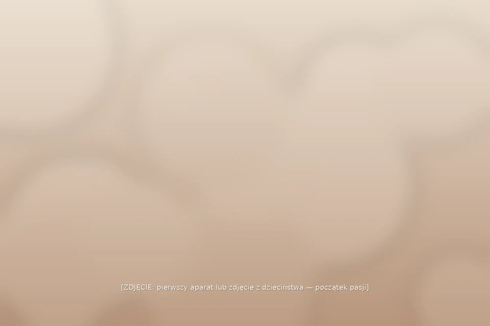
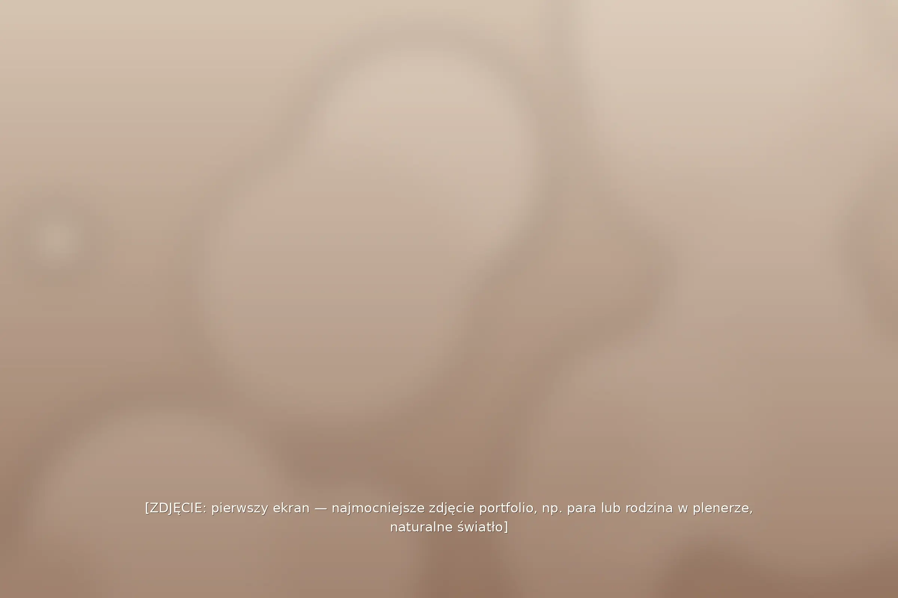
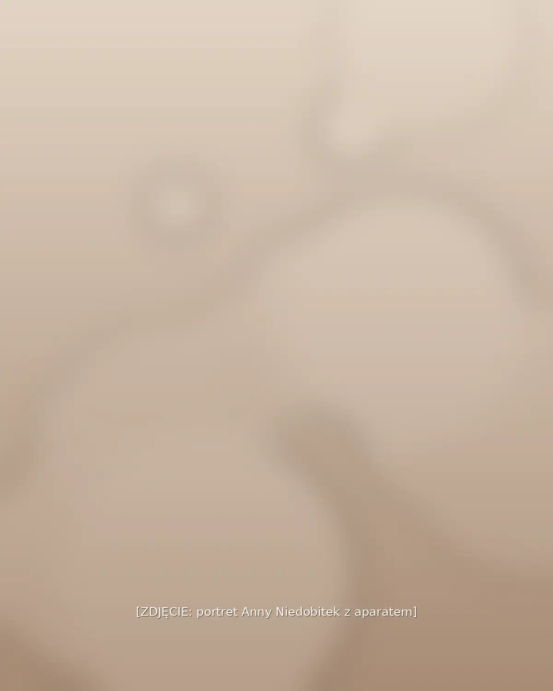
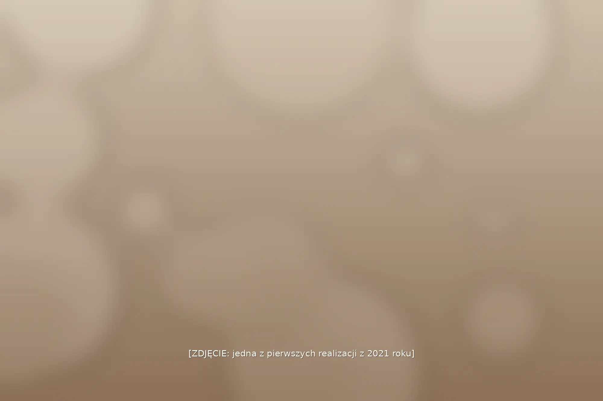
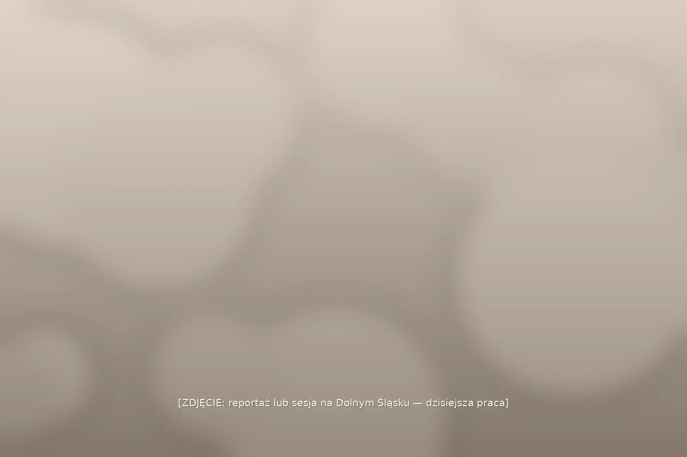
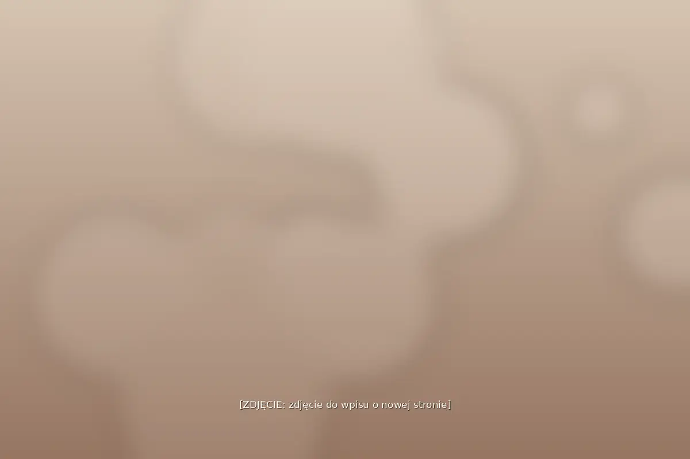

Pierwsze kadry
Moja przygoda z fotografią rozpoczęła się już w dzieciństwie, kiedy odkryłam, jak wiele można opowiedzieć za pomocą zdjęć.

Z miłości do pięknych kadrów
Naturalne zdjęcia, prawdziwe emocje i subtelny retusz — sesje oraz reportaże z ważnych chwil.
Zobacz portfolio
O mnie
Moją misją jest zatrzymywanie w kadrach chwil, które mają znaczenie – zarówno tych wyjątkowych, jak i pozornie codziennych. Stawiam na naturalność, prostotę i prawdziwe relacje.
Fotografuję:
Jasne zasady współpracy i szczera rozmowa o tym, czego Państwo oczekują.
Własną działalność fotograficzną prowadzę od 2021 roku — sesje i reportaże w całym regionie.
Każda sesja i każdy reportaż są inne, bo każda historia jest inna.
Spokój, swoboda i bez sztucznego pozowania — tak powstają prawdziwe emocje.
Fotografię odkryłam w dzieciństwie — dziś jest moim sposobem na życie.
Działam głównie na terenie Dolnego Śląska, realizując sesje zdjęciowe oraz reportaże z ważnych wydarzeń i uroczystości. Fotografuję rodziny, pary, kobiety, a także zajmuję się fotografią ślubną, rodzinną, ciążową, noworodkową i wizerunkową.
Na co dzień pracuję samodzielnie, dbając o indywidualne podejście do każdej osoby i realizacji. Przy większych reportażach ślubnych współpracuję z drugim fotografem, aby zapewnić pełniejszą dokumentację wydarzenia. Swoją ofertę kieruję przede wszystkim do mieszkańców regionu – osób prywatnych, rodzin, par oraz lokalnych przedsiębiorców.
Wyróżnia mnie przede wszystkim pasja do fotografii, którą odkryłam już w dzieciństwie i która z czasem stała się moim sposobem na życie. W swojej pracy stawiam na naturalność, autentyczność i indywidualne podejście do każdej osoby. Zależy mi na uchwyceniu prawdziwych chwil, emocji i relacji, bez sztucznego pozowania i nadmiernej ingerencji w wygląd fotografowanych osób.
Stosuję subtelny, minimalistyczny retusz, dzięki czemu zdjęcia zachowują swój naturalny charakter. Wierzę, że najpiękniejsze fotografie to te, które po latach pozwalają wrócić do wspomnień i przeżyć je na nowo.
Moja historia
Dzieciństwo

Moja przygoda z fotografią rozpoczęła się już w dzieciństwie, kiedy odkryłam, jak wiele można opowiedzieć za pomocą zdjęć.
2021

Z czasem pasja przerodziła się w sposób na życie i w 2021 roku rozpoczęłam prowadzenie własnej działalności fotograficznej.
Dziś

Sesje realizuję w promieniu ok. 100 km od Zgorzelca — m.in. w Görlitz, Bolesławcu i Legnicy, a reportaże ślubne na terenie całego Dolnego Śląska, także we Wrocławiu.
Aktualności

Witam serdecznie na mojej nowej stronie internetowej. Znajdą tu Państwo moje portfolio, aktualności z pracowni oraz wygodny…
Witam serdecznie na mojej nowej stronie internetowej. Znajdą tu Państwo moje portfolio, aktualności z pracowni oraz wygodny formularz kontaktowy.
[DO UZUPEŁNIENIA — treść wpisu od Anny]
Kto fotografuje
Na co dzień pracuję samodzielnie. Przy większych reportażach ślubnych współpracuję z drugim fotografem, aby zapewnić pełniejszą dokumentację wydarzenia.
Fotograf · założycielka pracowni
Fotografią zajmuję się od dziecka, a od 2021 roku prowadzę własną działalność. Realizuję sesje rodzinne, ciążowe, noworodkowe, kobiece, par i wizerunkowe oraz reportaże…
Fotografią zajmuję się od dziecka, a od 2021 roku prowadzę własną działalność. Realizuję sesje rodzinne, ciążowe, noworodkowe, kobiece, par i wizerunkowe oraz reportaże ślubne i z uroczystości. Stawiam na naturalność i subtelny retusz.
Galeria zdjęć i wideo
Na Instagramie publikuję najświeższe kadry z sesji i reportaży.
Kontakt
Sesje w promieniu ok. 100 km od Zgorzelca, reportaże ślubne na terenie całego Dolnego Śląska.
Zgorzelec, Görlitz, Bolesławiec, Legnica, Wrocław